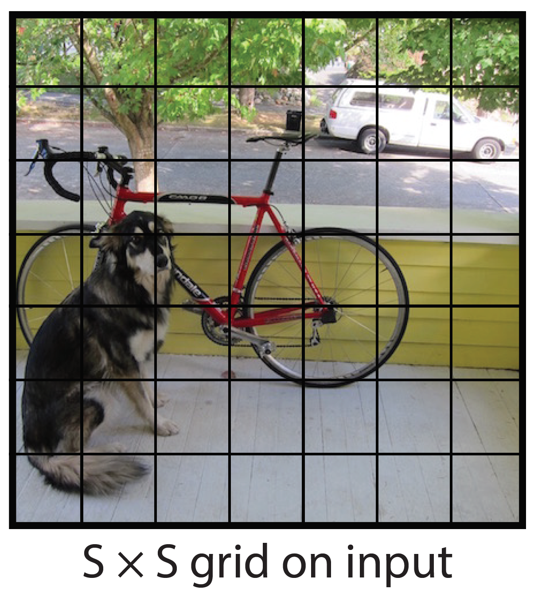
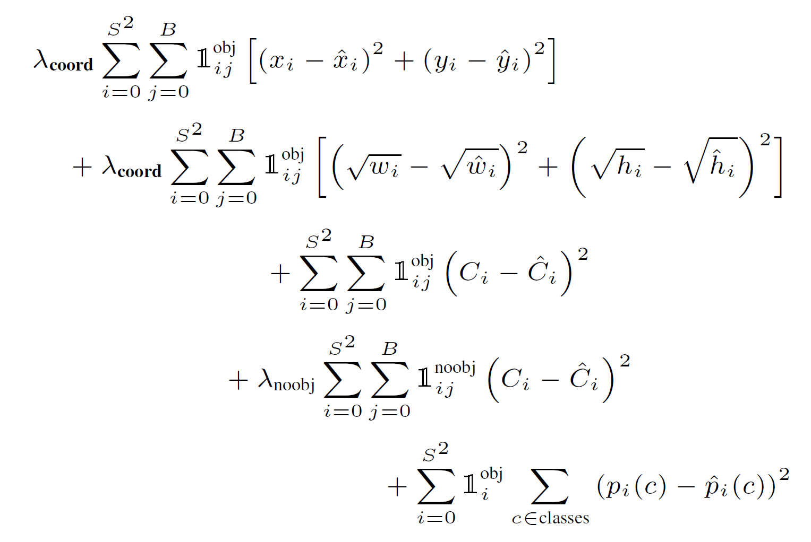
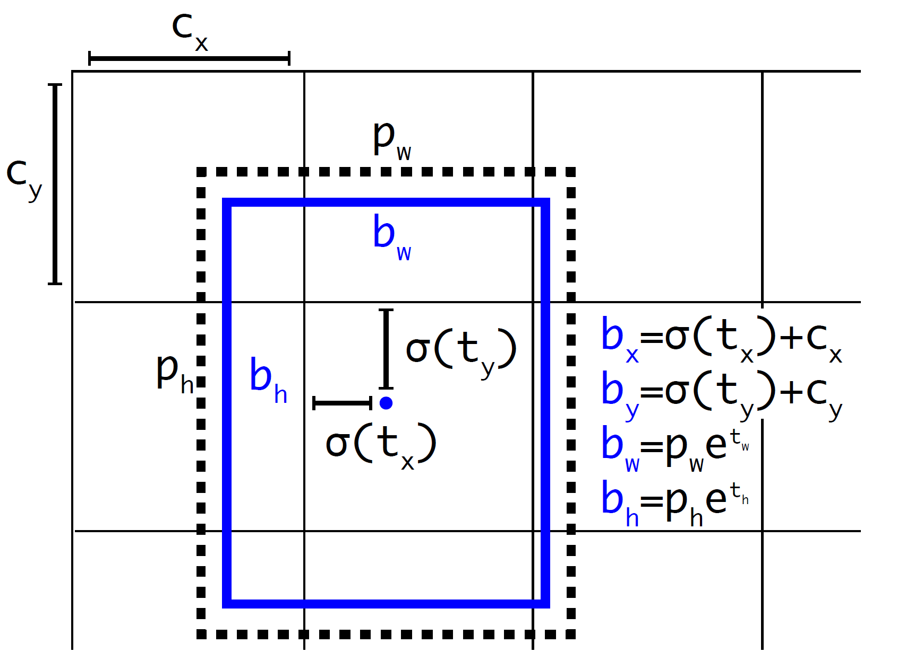
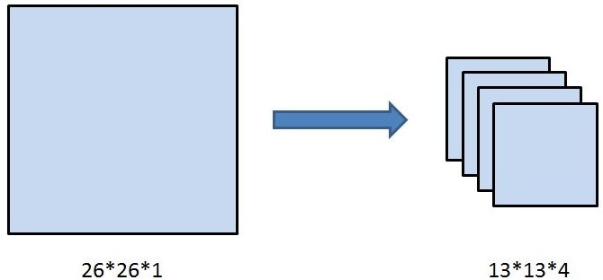
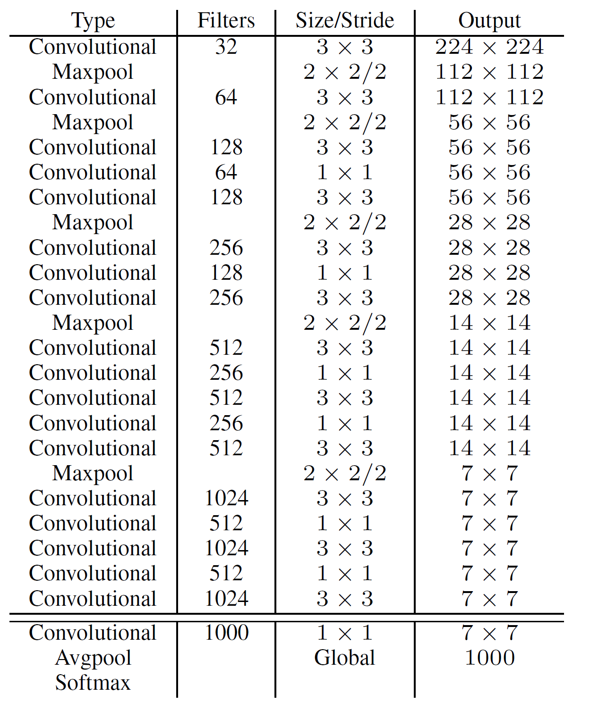
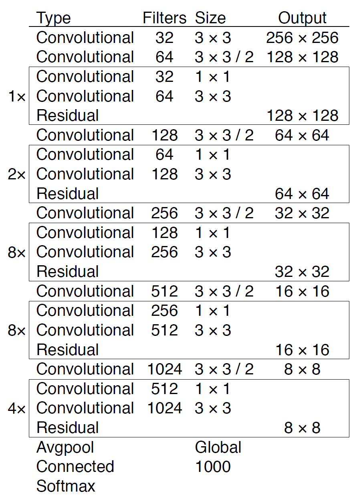

YOLOv1
网络结构

结构清晰明了，和一般的卷积物体分类网络没有太多区别。事实上，卷积网络部分参考了GoogLeNet的设计，但是把Inception Module换成了$1\times 1$ Reduction Layer. 整个CNN部分downscale 6次，因此输出维度$448/2^6=7$. 第一个”fully connected layer”其实是”locally connected layer”，yolov1.cfg文件中的参数如下：
1 | [local] |
本地连接层(locally connected laeyer)可以看作没有权重共享的卷积层。在卷积层中我们对每个位置都点乘了相同的filter，本地连接层对每个位置点乘不同的filter(即不共享权重)。比如输入维度是$7\times 7\times 1024$，如果是卷积层，输出维度应为
$$
{\rm output\_dim}=\frac{ {\rm input\_dim}+2\times{\rm pad}-{\rm kernel\_size} } { {\rm stride} }+1
= 7
$$
$7\times 7\times 256 = 12544$，与图中不符，可能是作者调整了某些参数。但该层是本地连接层，没有了权重共享，每一个滑动的位置都对应一个filter，因此共有
$$ {\rm output\_dim}\times {\rm output\_dim} \times {\rm kernel\_size}\times {\rm kernel\_size} \times {\rm input\_channel}\times {\rm output\_channel}\\ = 7\times 7\times 3\times 3\times 1024 \times 256 $$
个权重需要训练。
第一个全连接层之后是概率为0.5的dropout层。第二个全连接层输出维度$1715 = 7\times 7\times 35 = 7\times 7\times [3\times (4+1)+20] = S\times S\times [B\times (4+1)+C]$. 与图中维度不同，是因为Bounding Box数量从两个提升为三个.
输出维度含义
在Yolo中，如果一个物体的中心点，落在了某个格子中，那么这个格子将负责预测这个物体。用上图举例，设左下角格子假设坐标为$(1,1)$，小狗所在的最小包围矩形框的中心，落在了$(2,3)$这个格子中。那么$7\times 7$个格子中，$(2,3)$这个格子所对应的物体置信度标签为1，而那些没有物体中心点落进来的格子，对应的物体置信度标签为0. 输出维度是$S\times S\times [B\times (4+1)+C]$, $S\times S$是图片划分的网格数，$B$是每个网格预测的Bounding Box数量，4是Bounding Box的位置、大小属性$(x,y,w,h)$，1是置信度$c$(confidence score)${\rm Pr}( {\rm Object})\times {\rm IoU}$. 如果网格中没有物体，$c$应当为(“应当为”意味着我们需要训练神经网络使输出接近目标值)0；如果网格中有物体，$c$应当为预测的Bounding Box和Ground Truth之间的IoU. $C$是预测的每个类别的概率${\rm Pr}({\rm Class}_i | {\rm Object})$. 注意：
- 每个方格（grid） 产生$B$个预测框，$B$是参数，可以调，假设设定为2，那么每个方格只产生两个矩形框。在预测时，选定置信度$c$更大的矩形框作为输出，也就是最终每个方格只输出一个预测矩形框；在训练时，计算所有Bounding Box与Ground Truth的IoU，IoU最大的那个Bounding Box “responsible for predicting an object “ (损失函数表示了”responsible”的具体含义)
YOLO predicts multiple bounding boxes per grid cell. At training time we only want one bounding box predictor to be responsible for each object. We assign one predictor to be “responsible” for predicting an object based on which prediction has the highest current IOU with the ground truth. This leads to specialization between the bounding box predictors. Each predictor gets better at predicting certain sizes, aspect ratios, or classes of object, improving overall recall.
- 每个方格只能预测一个物体。虽然可以通过调整参数，产生不同的矩形框，但这只能提高矩形框的精度。当有很多个物体的中心点落在了同一个格子里，该格子只能预测一个物体。也就是格子数为$7\times 7$时，该网络最多预测49个物体
YOLO imposes strong spatial constraints on bounding box predictions since each grid cell only predicts two boxes and can only have one class. This spatial constraint limits the number of nearby objects that our model can predict. Our model struggles with small objects that appear in groups, such as flocks of birds.
损失函数
理解损失函数的要点如下：
- $1_i^{\rm obj}$值为1或0，表示训练样本的网格$i$中是否存在物体。 ${1}_{ij}^{\rm obj}$值为1或0，表示网格$i$的Bounding Box $j$是否对预测“负责”(responsible)，即是否是与Ground Truth IoU最大的那一个.
- $\hat{C}_i$是预测的置信度。当训练样本的网格$i$不含有物体时，$C_i = 0$；当含有物体时，$C_i$为”负责的”预测框与Ground Truth的IoU.
- $\hat{p}_i(c)$是预测的每个类别的概率。当$c$是训练样本网格$i$的真实类别时，$p_i(c) = 1$; 对其他$c$，$p_i(c) = 0$.
问题：这里的$\hat{p}_i(c)$是乘以${\rm Pr}( {\rm Object})\times {\rm IoU}$之后的吗？
一些技巧
- 回归offset代替直接回归坐标
We normalize the bounding box width and height by the image width and height so that they fall between 0 and 1. We parametrize the bounding box x and y coordinates to be offsets of a particular grid cell location so they are also bounded between 0 and 1.
$(x,y)$不直接回归中心点坐标数值，而是回归相对于格点左上角坐标的位移值。例如，第一个格点中物体坐标为$(2.3,3.6)$，另一个格点中的物体坐标为$(5.4,6.3)$，这四个数值让神经网络暴力回归，有一定难度。所以这里的offset是指，既然格点已知，那么物体中心点的坐标一定在格点正方形里，相对于格点左上角的位移值一定在区间$[0, 1)$中。让神经网络去预测$(0.3,0.6)$与 $(0.4,0.3)$会更加容易，在使用时，加上格点左上角坐标$(2,3)$、$(5,6)$即可。
- 同一格点的不同预测框有不同作用
前文中提到，每个格点预测两个或多个矩形框。此时假设每个格点预测两个矩形框。那么在训练时，见到一个真实物体，我们是希望两个框都去逼近这个物体的真实矩形框，还是只用一个去逼近？或许通常来想，让两个人一起去做同一件事，比一个人做一件事成功率要高，所以可能会让两个框都去逼近这个真实物体。但是作者没有这样做，在损失函数计算中，只对和真实物体最接近的框计算损失，其余框不进行修正。这样操作之后作者发现，一个格点的两个框在尺寸、长宽比、或者某些类别上逐渐有所分工，总体的召回率有所提升。
YOLOv2
先解释概念：Yolov2和Yolo9000算法内核相同，区别是训练方式不同：Yolov2用coco数据集训练后，可以识别80个种类。而Yolo9000可以使用coco数据集 + ImageNet数据集联合训练，可以识别9000多个种类。这里首先介绍Yolov2，列举出基于v1所做的改进；之后解读Yolo9000的训练方法。
Better
Batch Normalization
检测系列的网络结构中，BN逐渐变成了标配。在Yolo的每个卷积层中都加入BN之后，mAP提升了2%，并且去除了Dropout.
High Resolution Classifier
（分类网络高分辨率预训练）
在Yolov1中，网络的backbone部分会在ImageNet数据集上进行预训练，训练时网络输入图像的分辨率为$224\times 224$。在v2中，将分类网络在输入图片分辨率为$448\times 448$的ImageNet数据集上训练10个epoch，再使用检测数据集（例如coco）进行微调。高分辨率预训练使mAP提高了大约4%.
Convolutional With Anchor Boxes
（Anchor Box替换全连接层）
第一篇解读v1时提到，每个格点预测两个矩形框，在计算loss时，只让与ground truth最接近的框产生loss数值，而另一个框不做修正。这样规定之后，作者发现两个框在物体的大小、长宽比、类别上逐渐有了分工。在v2中，神经网络不对预测矩形框的宽高的绝对值进行预测，而是预测与Anchor框的偏差（offset），每个格点指定n个Anchor框。在训练时，最接近ground truth的框产生loss，其余框不产生loss。在引入Anchor Box操作后，mAP由69.5下降至69.2，原因在于，每个格点预测的物体变多之后，召回率大幅上升，准确率有所下降，总体mAP略有下降。
Dimension Clusters
（Anchor Box的宽高由聚类产生）
这里算是作者的一个创新点。Faster R-CNN中的九个Anchor Box的宽高是事先设定好的比例大小，一共设定三个面积大小的矩形框，每个矩形框有三个宽高比：1:1，2:1，1:2，总共九个框。而在v2中，Anchor Box的宽高不经过人为获得，而是将训练数据集中的矩形框全部拿出来，用k-means聚类得到先验框的宽和高。例如使用5个Anchor Box，那么k-means聚类的类别中心个数设置为5。加入了聚类操作之后，引入Anchor Box之后，mAP上升。k-means使用的距离函数如下：
$$
d({\rm box; centroid}) = 1 - {\rm IoU(box; centroid)}
$$
Direct location prediction
（绝对位置预测）
The network predicts 5 bounding boxes at each cell in the output feature map. The network predicts 5 coordinates for each bounding box, $t_x, t_y, t_w, t_h$, and $t_o$. If the cell is offset from the top left corner of the image by $(c_x, c_y)$ and the bounding box prior has width and height $p_w, p_h$, then the predictions correspond to:
$$ \begin{align*} b_x &= \sigma(t_x) + c_x\\ b_y &= \sigma(t_y) + c_y\\ b_w &= p_w e^{t_w}\\ b_h &= p_h e^{t_h}\\ {\rm Pr(object)}\times {\rm IoU(b,object)} &= \sigma(t_o) \end{align*} $$
Fine-Grained Features
（细粒度特征）
在$26\times 26$的特征图，经过卷积层等，变为$13\times 13$的特征图后，作者认为损失了很多细粒度的特征，导致小尺寸物体的识别效果不佳，所以在此加入了passthrough层。

这一段网络在yolov2.cfg文件中的参数如下：
1 | ... |
route层具有一个layers属性，它可以具有一个或两个值。
当layers属性只有一个值时，它会输出由该值索引的层的特征图。在上面的参数中，它是-9，因此该层将输出位于Route层前面的第9层的特征图。
当层有两个值时，它会返回由其值所索引的层的特征图的连接。在上面的参数中，它是-1, -4，该层输出来自前一层和前面第4层的特征图，它们沿着深度维度进行连接。
passthrough层在yolov2.cfg中叫做reorg. 如上图所示，passthrough层就是将$26\times 26\times 1$的特征图，变成$13\times 13\times 4$的特征图，在这一次操作中不损失细粒度特征。有人说passthrough层分成四份的具体细节，并不是两刀切成4块，而是在每个$2\times 2$的小区域上都选择左上角块。其实这里怎么切都一样，在之后$1\times 1$卷积层中，不过是加法交换律的事。
Multi-Scale Training
（多尺寸训练）
很关键的一点是，Yolo v2中只有卷积层与池化层，所以对于网络的输入大小，并没有限制，整个网络的降采样倍数为32，只要输入的特征图尺寸为32的倍数即可，如果网络中有全连接层，就不是这样了。所以Yolo v2可以使用不同尺寸的输入图片训练。
作者使用的训练方法是，在每10个batch之后，就将图片resize成{320, 352, …, 608}中的一种。不同的输入，最后产生的格点数不同，比如输入图片是$320\times 320$，那么输出格点是$10\times 10$，如果每个格点的先验框个数设置为5，那么总共输出500个预测结果；如果输入图片大小是$608\times 608$，输出格点就是$19\times 19$，共1805个预测结果。
在引入了多尺寸训练方法后，迫使卷积核学习不同比例大小尺寸的特征。当输入设置为$544\times 544$甚至更大，Yolo v2的mAP已经超过了其他的物体检测算法。
Faster
Darknet-19
输出维度含义
1 | yolov2-voc.cfg |
YOLOv2 Input尺寸是$416\times 416$，downscaling 5次(缩小1/32)，所以最后输出是一个$13\times 13\times ( (5+{\rm \#classes} )\times {\rm \#anchors}) = 13\times 13\times ( (5+20)\times 5)= 13\times 13\times 125$(输出通道数等于最后一个卷积层的filter数量125)。注意YOLOv2的输出是$S\times S\times [B\times (5+C)]$，而YOLOv1的输出是$S\times S\times [B\times 5+C]$
YOLOv3
网络架构
Backbone
backbone部分由Yolov2时期的Darknet-19进化至Darknet-53，加深了网络层数，引入了Resnet中的跨层加和操作。
网络结构全貌


网络结构解析：
- Yolov3中，只有卷积层，通过调节卷积步长控制输出特征图的尺寸。所以对于输入图片尺寸没有特别限制。流程图中，输入图片以$256\times 256$作为样例。
- Yolov3借鉴了金字塔特征图思想，小尺寸特征图用于检测大尺寸物体，而大尺寸特征图检测小尺寸物体。特征图的输出维度为$S\times S\times [ (4+1+{\rm \#classes})\times {\rm \#anchors}]$ ， $S\times S$为输出特征图格点数。Yolov3每一个尺寸的特征图的每一个网格有3个Anchor框，每个框有4维预测框数值$t_x,t_y,t_w,t_h$，1维预测框置信度，假设有80维物体类别数，则第一层特征图的输出维度为$8\times 8\times 255$.
YOLOv3 predicts boxes at 3 different scales. Our system extracts features from those scales using a similar concept to feature pyramid networks. From our base feature extractor we add several convolutional layers. The last of these predicts a 3-d tensor encoding bounding box, objectness, and class predictions. In our experiments with COCO we predict 3 boxes at each scale so the tensor is $N \times N \times [3 \times (4+1+80)]$ for the 4 bounding box offsets, 1 objectness prediction, and 80 class predictions.
Yolov3总共输出3个特征图，第一个特征图下采样32倍，第二个特征图下采样16倍，第三个下采样8倍。输入图像经过Darknet-53（无全连接层），再经过Yoloblock生成的特征图被当作两用，第一用为经过$3\times 3$卷积层、$1\times 1$卷积之后生成特征图一，第二用为经过$1\times 1$卷积层加上采样层，与Darnet-53网络的中间层输出结果进行拼接，产生特征图二。同样的循环之后产生特征图三。
concat操作与加和操作的区别：加和操作来源于ResNet思想，将输入的特征图，与输出特征图按对应维度进行相加；而concat操作源于DenseNet网络的设计思路，将特征图按照通道维度直接进行拼接，例如$8\times 8\times 16$的特征图与$8\times 8\times 16$的特征图拼接后生成$8\times 8\times 32$的特征图。
上采样层(upsample)：作用是将小尺寸特征图通过插值等方法，生成大尺寸图像。例如使用最近邻插值算法，将$8\times 8$的图像变换为$16\times 16$。上采样层不改变特征图的通道数。
Yolov3的整个网络，吸取了Resnet、Densenet、FPN的精髓，可以说是融合了目标检测当前业界最有效的全部技巧。
输出特征图（前向传播）
根据不同的输入尺寸，会得到不同大小的输出特征图，以上图中输入图片$256 × 256 × 3$为例，输出的特征图为$8 × 8 × 255$、$16 × 16 × 255$、$32 × 32 × 255$。在Yolov3的设计中，每个特征图的每个格子中，都配置3个不同的先验框，所以最后三个特征图，可以reshape为$8 × 8 × 3 × 85$、$16 × 16 × 3 × 85$、$32 × 32 × 3 × 85$，这样更容易理解，在代码中也是reshape成这样之后更容易操作。
先验框
在Yolov1中，网络直接回归检测框的宽、高，这样效果有限。所以在Yolov2中，改为了回归基于先验框的变化值，这样网络的学习难度降低，整体精度提升不小。Yolov3沿用了Yolov2中关于先验框的技巧，并且使用k-means对数据集中的标签框进行聚类，得到类别中心点的9个框，作为先验框。在COCO数据集中（原始图片全部resize为$416 × 416$），九个框分别是$ (10×13)$，$(16×30)$，$(33×23)$，$(30×61)$，$(62×45)$，$(59× 119)$， $(116 × 90)$， $(156 × 198)$，$(373 × 326) $，顺序为$w × h$。
注：先验框只与检测框的$w、h$有关，与$x、y$无关。
检测框解码
有了先验框与输出特征图，就可以解码检测框$x,y,w,h$. 公式与图示在Yolov2已经给出了，这里再给出一遍图示。
举个具体的例子，假设对于第二个特征图$16 × 16 × 3 × 85$中的第$[5，4，2]$维，$c_y$为5，$c_x$为4，第二个特征图对应的先验框为$(30×61)$，$(62×45)$，$(59× 119)$，prior_box的index为2，那么取最后一个$(59,119)$作为先验$w$、先验$h$。这样计算之后的$b_x,b_y$ 还需要乘以特征图二的采样率16，得到真实的检测框$x，y$.
置信度解码
置信度在输出85维中占固定一位，由sigmoid函数解码即可，解码之后数值区间在$[0，1]$中。
类别解码
COCO数据集有80个类别，所以类别数在85维输出中占了80维，每一维独立代表一个类别的置信度。使用sigmoid激活函数替代了Yolov2中的softmax，取消了类别之间的互斥，可以使网络更加灵活。
Each box predicts the classes the bounding box may contain using multilabel classification. We do not use a softmax as we have found it is unnecessary for good performance, instead we simply use independent logistic classifiers. During training we use binary cross-entropy loss for the class predictions.
…
Using a softmax imposes the assumption that each box has exactly one class which is often not the case. A multilabel approach better models the data.
三个特征图一共可以解码出 $8 × 8 × 3 + 16 × 16 × 3 + 32 × 32 × 3 = 4032 $个box以及相应的类别、置信度。这4032个box，在训练和推理时，使用方法不一样：
- 训练时4032个box全部送入打标签函数，进行后一步的标签以及损失函数的计算。
- 推理时，选取一个置信度阈值，过滤掉低阈值box，再经过NMS（非极大值抑制），就可以输出整个网络的预测结果了。
训练策略与损失函数（反向过程）
训练策略
YOLOv3 predicts an objectness score for each bounding box using logistic regression. This should be 1 if the bounding box prior overlaps a ground truth object by more than any other bounding box prior. If the bounding box prior is not the best but does overlap a ground truth object by more than some threshold we ignore the prediction, following. We use the threshold of .5. Unlike [17] our system only assigns one bounding box prior for each ground truth object. If a bounding box prior is not assigned to a ground truth object it incurs no loss for coordinate or class predictions, only objectness.
- 预测框一共分为三种情况：正例（positive）、负例（negative）、忽略样例（ignore）。
- 正例：任取一个ground truth，与4032个框全部计算IoU，IoU最大的预测框，即为正例。并且一个预测框，只能分配给一个ground truth。例如第一个ground truth已经匹配了一个正例检测框，那么下一个ground truth，就在余下的4031个检测框中，寻找IoU最大的检测框作为正例。ground truth的先后顺序可忽略。正例产生置信度loss、检测框loss、类别loss。预测框为对应的ground truth box标签（需要反向编码，使用真实的$x,y,w,h$计算出$t_x,t_y,t_w,t_h$ ）；目标类别标签中正确类别为1，其余为0；目标置信度标签为1。
- 忽略样例：正例除外，与任意一个ground truth的IoU大于阈值（论文中使用0.5），则为忽略样例。忽略样例不产生任何loss.
- 负例：正例除外（与ground truth计算后IOU最大的检测框，但是IoU小于阈值，仍为正例），与全部ground truth的IoU都小于阈值（0.5），则为负例。负例只有置信度产生loss，置信度标签为0.
损失函数
我们知道，在目标检测任务里，有几个关键信息是需要确定的：
$$
(x,y),(w,h),{\rm class},{\rm confidence}
$$
在$S_1\times S_1$特征图上的损失函数定义为：
$$ \begin{align*} {\rm loss}=&\lambda_{\rm coord} \sum_{i=0}^{S_1\times S_1} \sum_{j=0}^{B}{1}_{ij}^{\rm obj} [(t_{x_i}-\hat t_{x_i})^2 + (t_{y_i} - \hat t_{y_i})^2]\\ +& \lambda_{\rm coord} \sum_{i=0}^{S_1\times S_1} \sum_{j=0}^{B}{1}_{ij}^{\rm obj} [(t_{w_i}-\hat t_{w_i})^2 + (t_{h_i} - \hat t_{h_i})^2]\\ -& \lambda_{\rm obj} \sum_{i=0}^{S_1\times S_1} \sum_{j=0}^{B}{1}_{ij}^{\rm obj} \log(c_{ij}) - \lambda_{\rm noobj} \sum_{i=0}^{S_1\times S_1} \sum_{j=0}^{B}{1}_{ij}^{\rm noobj} \log(1-c_{ij})\\ -& \lambda_{\rm class} \sum_{i=0}^{S_1\times S_1} \sum_{j=0}^{B}{1}_{ij}^{\rm obj} \sum_{c\in {\rm classes} } [\hat p_{ij}(c)\log(p_{ij}(c)) + (1-\hat p_{ij}(c))\log(1-p_{ij}(c))] \end{align*} $$
YOLOv3的loss为三个特征图Loss之和。
- $\lambda$为权重常数，控制检测框loss、obj置信度loss、noobj置信度loss之间的比例，通常负例的个数是正例的几十倍以上，可以通过权重超参控制检测效果。
- $1_{ij}^{\rm obj}$若是正例则输出1，否则为0；$1_{ij}^{\rm noobj}$ 若是负例则输出1，否则为0；忽略样例都输出0。
- $x,y,w,h$使用MSE作为损失函数，也可以使用smooth L1 loss（出自Faster R-CNN）作为损失函数。smooth L1可以使训练更加平滑。置信度、类别标签由于是0，1二分类，所以使用二元交叉熵作为损失函数。
一些问题
你可能已经注意到了：YOLOv1中的置信度标签，是预测框与真实框的IoU，但YOLOv3中是1或0. 为什么？
置信度意味着该预测框是或者不是一个真实物体，是一个二分类，所以标签是1、0更加合理。
笔者实验结果：第一种：置信度标签取预测框与真实框的IoU；第二种：置信度标签取1。第一种的结果是，在训练时，有些预测框与真实框的IoU极限值就是0.7左右，置信度以0.7作为标签，置信度学习有一些偏差，最后学到的数值是0.5，0.6，那么假设推理时的激活阈值为0.7，这个检测框就被过滤掉了。但是IoU为0.7的预测框，其实已经是比较好的学习样例了。尤其是coco中的小像素物体，几个像素就可能很大程度影响IoU，所以第一种训练方法中，置信度的标签始终很小，无法有效学习，导致检测召回率不高。而检测框趋于收敛，IoU收敛至1，置信度就可以学习到1，这样的设想太过理想化。而使用第二种方法，召回率明显提升了很高。
注：本篇笔记参考、摘录了如下资料